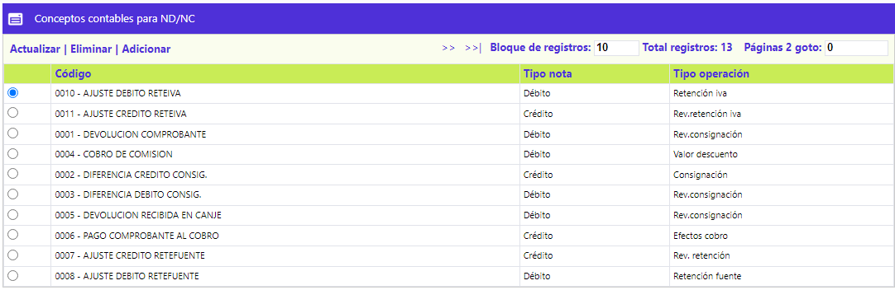
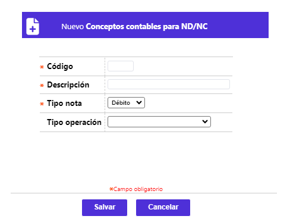

Conceptos contables para ND/NC
Mediante esta función se definen los conceptos que se tendrán en cuenta para la afectación de las cuentas corrientes o de ahorros de los establecimientos, así como la operación que se deriva de dicho concepto.
El formulario contiene los enlaces: Actualizar, Eliminar y Adicionar y Detalle.

Adicionar: Si el usuario invoca la opción Adicionar se despliega un formulario con los siguientes campos:

|
Código |
Campo alfanumérico de 5 posiciones, obligatorio, que identifica el código del concepto que se tendrá en cuenta de acuerdo con el evento que ocurra. |
|
Descripción |
Campo alfanumérico de 30 posiciones, obligatorio, en el cual se registra el nombre del concepto. |
|
Tipo nota |
Campo que contiene una lista de valores adjunta de la cual se selecciona entre Nota débito o Nota crédito, el tipo de registro asociado a cada evento, que de acuerdo con las especificaciones de la interface, aparecerá en el extracto de la cuenta del establecimiento. |
|
Tipo operación |
Campo con lista de valores adjunta de la cual, de acuerdo con el evento y guardando estrecha relación con el tipo de concepto, se identifica el tipo de registro que se debe realizar en la cuenta corriente o de ahorros del establecimiento, constituyéndose en otra manera de identificar la procedencia del movimiento dentro del sistema. |
Actualizar: Al activar ese enlace se despliega un nuevo formulario en el cual los únicos campos modificables son: Descripción, Tipo nota, y Tipo operación.